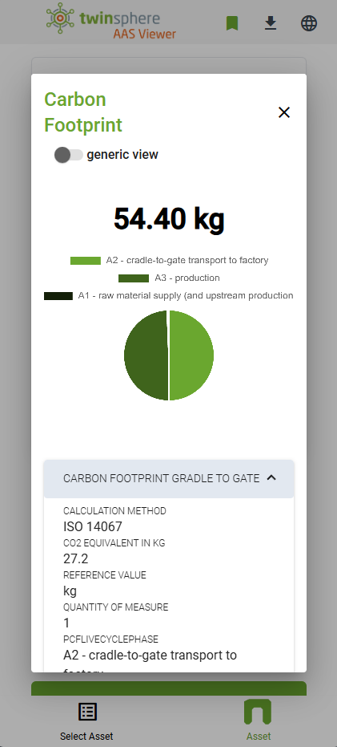
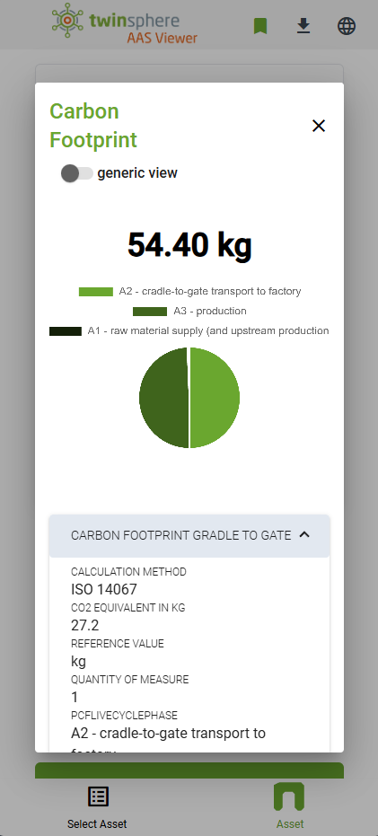

twinsphere Viewer Overview
The twinsphere Viewer is a mobile-first designed web viewer for asset administration shells.
It is able to scan a QR-Code on a physical asset containing its globalAssetId, do the lookup of its digital twin by an AAS Discovery Service and get the twin's endpoints by querying an AAS Registry Service. It then gets the shell and all its referenced submodels and displays their data nicely to the clients screen.
 

Login
To login into the twinsphere Viewer for your tenant, you will need a twinsphere ID account. Please contact the twinsphere support team for the configuration. Alternatively you can use your own identity provider service, configuration instruction can be found in the identity provider documentation.